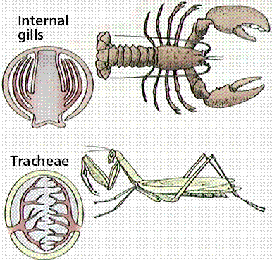
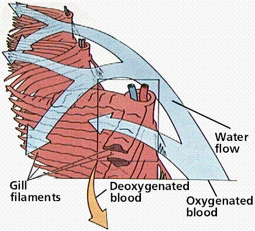
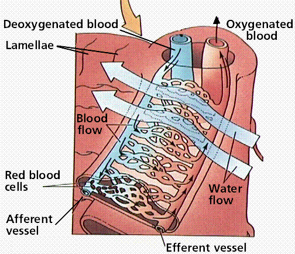
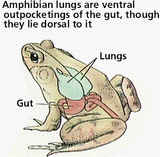
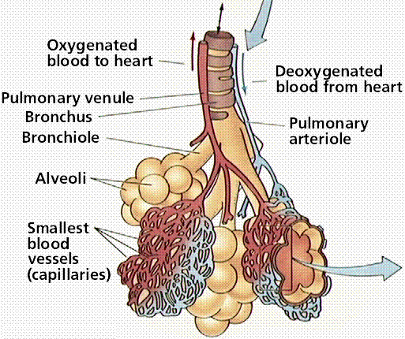
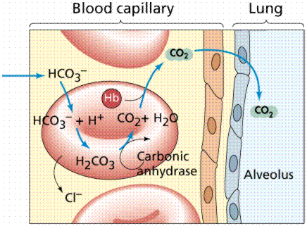

The Respiratory System and Gas Exchange | Bodies and Respiration
Respiratory Surfaces | Methods of Respiration | Respiratory System Principles
The Human Respiratory System | Diseases of the Respiratory System
The Alveoli and Gas Exchange | Control of Respiration | Links
Cellular respiration involves the breakdown of organic molecules to produce ATP. A sufficient supply of oxygen is required for the aerobic respiratory machinery of Kreb's Cycle and the Electron Transport System to efficiently convert stored organic energy into energy trapped in ATP. Carbon dioxide is also generated by cellular metabolism and must be removed from the cell. There must be an exchange of gases: carbon dioxide leaving the cell, oxygen entering. Animals have organ systems involved in facilitating this exchange as well as the transport of gases to and from exchange areas.
Single-celled organisms exchange gases directly across their cell membrane. However, the slow diffusion rate of oxygen relative to carbon dioxide limits the size of single-celled organisms. Simple animals that lack specialized exchange surfaces have flattened, tubular, or thin shaped body plans, which are the most efficient for gas exchange. However, these simple animals are rather small in size.
Large animals cannot maintain gas exchange by diffusion across their outer surface. They developed a variety of respiratory surfaces that all increase the surface area for exchange, thus allowing for larger bodies. A respiratory surface is covered with thin, moist epithelial cells that allow oxygen and carbon dioxide to exchange. Those gases can only cross cell membranes when they are dissolved in water or an aqueous solution, thus respiratory surfaces must be moist.
Sponges and jellyfish lack specialized organs for gas exchange and take in gases directly from the surrounding water. Flatworms and annelids use their outer surfaces as gas exchange surfaces. Arthropods, annelids, and fish use gills; terrestrial vertebrates utilize internal lungs.

Gas exchange systems in several animals. Images from Purves et al., Life: The Science of Biology, 4th Edition, by Sinauer Associates (www.sinauer.com) and WH Freeman (www.whfreeman.com), used with permission.
Flatworms and annelids use their outer surfaces as gas exchange surfaces. Earthworms have a series of thin-walled blood vessels known as capillaries. Gas exchange occurs at capillaries located throughout the body as well as those in the respiratory surface.
Amphibians use their skin as a respiratory surface. Frogs eliminate carbon dioxide 2.5 times as fast through their skin as they do through their lungs. Eels (a fish) obtain 60% of their oxygen through their skin. Humans exchange only 1% of their carbon dioxide through their skin. Constraints of water loss dictate that terrestrial animals must develop more efficient lungs.
Gills greatly increase the surface area for gas exchange. They occur in a variety of animal groups including arthropods (including some terrestrial crustaceans), annelids, fish, and amphibians. Gills typically are convoluted outgrowths containing blood vessels covered by a thin epithelial layer. Typically gills are organized into a series of plates and may be internal (as in crabs and fish) or external to the body (as in some amphibians).
Gills are very efficient at removing oxygen from water: there is only 1/20 the amount of oxygen present in water as in the same volume of air. Water flows over gills in one direction while blood flows in the opposite direction through gill capillaries. This countercurrent flow maximizes oxygen transfer.


Countercurrent flow in a fish. Images from Purves et al., Life: The Science of Biology, 4th Edition, by Sinauer Associates (www.sinauer.com) and WH Freeman (www.whfreeman.com), used with permission.
Many terrestrial animals have their respiratory surfaces inside the body and connected to the outside by a series of tubes.Tracheae are these tubes that carry air directly to cells for gas exchange. Spiracles are openings at the body surface that lead to tracheae that branch into smaller tubes known as tracheoles. Body movements or contractions speed up the rate of diffusion of gases from tracheae into body cells. However, tracheae will not function well in animals whose body is longer than 5 cm.
Respiratory system in an insect. Image from Purves et al., Life: The Science of Biology, 4th Edition, by Sinauer Associates (www.sinauer.com) and WH Freeman (www.whfreeman.com), used with permission.
Lungs are ingrowths of the body wall and connect to the outside by as series of tubes and small openings. Lung breathing probably evolved about 400 million years ago. Lungs are not entirely the sole property of vertebrates, some terrestrial snails have a gas exchange structures similar to those in frogs.

Lungs in a bird (top) and amphibian (bottom). Images from Purves et al., Life: The Science of Biology, 4th Edition, by Sinauer Associates (www.sinauer.com) and WH Freeman (www.whfreeman.com), used with permission.
Functional unit of a mammalian lung. Image from Purves et al., Life: The Science of Biology, 4th Edition, by Sinauer Associates (www.sinauer.com) and WH Freeman (www.whfreeman.com), used with permission.
This system includes the lungs, pathways connecting them to the outside environment, and structures in the chest involved with moving air in and out of the lungs.
The human respiratory system. Image from Purves et al., Life: The Science of Biology, 4th Edition, by Sinauer Associates (www.sinauer.com) and WH Freeman (www.whfreeman.com), used with permission.
Air enters the body through the nose, is warmed, filtered, and passed through the nasal cavity. Air passes the pharynx (which has the epiglottis that prevents food from entering the trachea).The upper part of the trachea contains the larynx. The vocal cords are two bands of tissue that extend across the opening of the larynx. After passing the larynx, the air moves into the bronchi that carry air in and out of the lungs.

The lungs and alveoli and their relationship to the diaphragm and capillaries. Images from Purves et al., Life: The Science of Biology, 4th Edition, by Sinauer Associates (www.sinauer.com) and WH Freeman (www.whfreeman.com), used with permission.
Bronchi are reinforced to prevent their collapse and are lined with ciliated epithelium and mucus-producing cells. Bronchi branch into smaller and smaller tubes known as bronchioles. Bronchioles terminate in grape-like sac clusters known as alveoli. Alveoli are surrounded by a network of thin-walled capillaries. Only about 0.2 µm separate the alveoli from the capillaries due to the extremely thin walls of both structures.
Gas exchange across capillary and alveolus walls. Image from Purves et al., Life: The Science of Biology, 4th Edition, by Sinauer Associates (www.sinauer.com) and WH Freeman (www.whfreeman.com), used with permission.
The lungs are large, lobed, paired organs in the chest (also known as the thoracic cavity). Thin sheets of epithelium (pleura) separate the inside of the chest cavity from the outer surface of the lungs. The bottom of the thoracic cavity is formed by the diaphragm.
Ventilation is the mechanics of breathing in and out. When you inhale, muscles in the chest wall contract, lifting the ribs and pulling them, outward. The diaphragm at this time moves downward enlarging the chest cavity. Reduced air pressure in the lungs causes air to enter the lungs. Exhaling reverses theses steps.
Inhalation and exhalation. Image from Purves et al., Life: The Science of Biology, 4th Edition, by Sinauer Associates (www.sinauer.com) and WH Freeman (www.whfreeman.com), used with permission.
The condition of the airways and the pressure difference between the lungs and atmosphere are important factors in the flow of air in and out of lungs. Many diseases affect the condition of the airways.
Diffusion is the movement of materials from a higher to a lower concentration. The differences between oxygen and carbon dioxide concentrations are measured by partial pressures. The greater the difference in partial pressure the greater the rate of diffusion.
Respiratory pigments increase the oxygen-carrying capacity of the blood. Humans have the red-colored pigment hemoglobin as their respiratory pigment. Hemoglobin increases the oxygen-carrying capacity of the blood between 65 and 70 times. Each red blood cell has about 250 million hemoglobin molecules, and each milliliter of blood contains 1.25 X 1015 hemoglobin molecules. Oxygen concentration in cells is low (when leaving the lungs blood is 97% saturated with oxygen), so oxygen diffuses from the blood to the cells when it reaches the capillaries.
Effectiveness of various oxygen carrying molecules. Image from Purves et al., Life: The Science of Biology, 4th Edition, by Sinauer Associates (www.sinauer.com) and WH Freeman (www.whfreeman.com), used with permission.
Carbon dioxide concentration in metabolically active cells is much greater than in capillaries, so carbon dioxide diffuses from the cells into the capillaries. Water in the blood combines with carbon dioxide to form bicarbonate. This removes the carbon dioxide from the blood so diffusion of even more carbon dioxide from the cells into the capillaries continues yet still manages to "package" the carbon dioxide for eventual passage out of the body.

Details of gas exchange. Images from Purves et al., Life: The Science of Biology, 4th Edition, by Sinauer Associates (www.sinauer.com) and WH Freeman (www.whfreeman.com), used with permission.
In the alveoli capillaries, bicarbonate combines with a hydrogen ion (proton) to form carbonic acid, which breaks down into carbon dioxide and water. The carbon dioxide then diffuses into the alveoli and out of the body with the next exhalation.
Muscular contraction and relaxation controls the rate of expansion and constriction of the lungs. These muscles are stimulated by nerves that carry messages from the part of the brain that controls breathing, the medulla. Two systems control breathing: an automatic response and a voluntary response. Both are involved in holding your breath.
Although the automatic breathing regulation system allows you to breathe while you sleep, it sometimes malfunctions. Apnea involves stoppage of breathing for as long as 10 seconds, in some individuals as often as 300 times per night. This failure to respond to elevated blood levels of carbon dioxide may result from viral infections of the brain, tumors, or it may develop spontaneously. A malfunction of the breathing centers in newborns may result in SIDS (sudden infant death syndrome).
As altitude increases, atmospheric pressure decreases. Above 10,000 feet decreased oxygen pressures causes loading of oxygen into hemoglobin to drop off, leading to lowered oxygen levels in the blood. The result can be mountain sickness (nausea and loss of appetite). Mountain sickness does not result from oxygen starvation but rather from the loss of carbon dioxide due to increased breathing in order to obtain more oxygen.
Email: mj.farabee@emcmail.maricopa.edu
Last modified:
The URL of this page is: